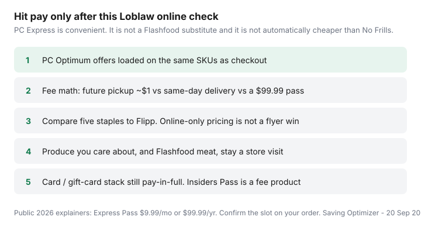

Food & Groceries · Canada
Saving at Loblaw online: offers, passes, and when in-store still wins
PC Express feels like you finally beat the grocery store. Then an unloaded Optimum offer sits unused, a same-day slot costs about $10, a staple is quietly above the flyer, and the Flashfood chicken never makes the tote because Flashfood is a different fridge in the building. Loblaw online is a convenience product. It is not automatically a savings product.
This checklist is for Superstore, No Frills, Loblaws, and sister Express flows: load offers, run fee math, catch online pricing, keep surplus in-store, and stack cards without debt. It pairs with the pickup vs in-store hybrid and the three-platform fee guide.
Disclosure: PC Financial Mastercard (including Insiders), Express Pass, and grocery gift cards are offer types. Saving Optimizer may earn a commission if we later add partner links. We do not currently claim PC Financial or Loblaw partnerships. Pay the statement in full.
Key takeaways
- Load PC Optimum offers against the same SKUs you are buying online. Unloaded offers are decoration.
- Future pickup ~$1 often beats a $99.99 pass. Weekly same-day delivery does not.
- Compare staples to Flipp. Online is allowed to be convenient and still expensive.
- Flashfood remains an in-store zone with its own payment.
- Insiders WE is a $120 fee card that happens to include a pass — only if you already wanted the card.
Loading Optimum offers for online checkout
Grocery PC earn is offers-first — the same Sunday job as an in-store week. Open PC Optimum, load weekly and personalized offers, then build the Express cart and confirm the offer lines before pay. Details in maximize PC Optimum. Shoppers bonus events are a different building; do not expect a Shoppers multiplier on a Superstore tote.
Scan or enter the PC number even when you think nothing loaded. Missing points have a claim path. One receipt check trains the habit.
PC Express fees vs time savings
Public 2026 explainers (Milesopedia and others, reviewed Sep 2026):
- Pass: about $9.99/month or $99.99/year.
- Without pass: future pickup often about $1; future delivery and same-day delivery stack higher (examples around $1 + $4.99 or $1 + $8.99 depending on slot).
- PC Insiders World Elite (~$120) bundles an Express Pass. That is card math, not free grocery delivery from heaven — PC Financial worksheet.
If you only pickup, paying $1 × 52 is about $52 — cheaper than $99.99 unless you are on a promo pass. If you same-day deliver every week, the pass is the product. Starting some pass trials can affect legacy Insiders subscriptions — read the box you tick.
Online-only pricing pitfalls
Do not assume the app equals the aisle. Before pay, compare five staples you know (eggs, milk, oats, a freezer veg, a meat) to Flipp and to last week’s till. If the app is higher, you are buying time. That can be rational. It is not a “deal.”
Substitutions still happen. Lock refunds on diet SKUs. Walk produce you care about. Hybrid behaviour is the pickup vs in-store page.
Flashfood still requires a store visit
Flashfood is prepaid in the Flashfood app and handed over in a marked zone. It will not appear in the Express tote. If surplus meat is part of your protein plan, schedule pickup so you can walk the zone, or skip Flashfood that week. Freeze same day — Flashfood Canada guide.
Gift card and card stacking notes
Pay with the Mastercard that matches Loblaw if you use one, and pay it off. Amex is still commonly declined at many Loblaw tills; Express checkout can differ — test a small order. Gift cards: official cards via a portal can make sense; test whether Express accepts them before you prefund. Loyalty often does not earn on buying the plastic. See gift-card cashback and pay-in-full stacking.
Decision checklist before hitting pay

- PC Optimum offers loaded and visible on the order.
- Fee understood: $1 pickup vs delivery vs a pass you already pay for.
- Five staples checked against Flipp.
- Produce/Flashfood plan named (walk, skip, or hybrid).
- Payment is a card you pay in full, or a tested gift card — not a revolving balance.
Default: Express pickup for staples, in-store for meat and fruit, Flashfood only on that visit. Delivery is for ice-storm weeks, not a personality.
Sources & date stamps
- Milesopedia / moneyGenius PC Express Pass explainers: $9.99 / $99.99; slot fee patterns; Insiders bundle (reviewed Sep 2026).
- PC Optimum public earn rules: grocery is offers-led (our maximize-PC guide).
- Flashfood / Loblaw: in-store zone, separate payment (2 Mar 2026 partnership figures in the Flashfood guide).
- Rakuten.ca Gift Card Shop patterns for Loblaw-family cards — perishable rates.
Frequently asked questions
Do PC Optimum offers work on PC Express?
Weekly and personalized grocery offers generally apply when they are loaded and the SKU matches. Load them in the PC Optimum or store app before checkout and confirm they appear on the order. Some in-store-only events and Flashfood purchases will not show up on an Express receipt.
Is a PC Express Pass worth it?
Public 2026 explainers list $9.99 a month or $99.99 a year. Future pickup without a pass is often about $1. Same-day delivery without a pass can approach $10. The pass is a delivery-habit product. The PC Insiders World Elite ($120 fee) bundles a pass if you already wanted that card.
Is online Loblaw pricing the same as in store?
Not always. Compare five staples to Flipp and to a recent till receipt. Flyer prices may appear at checkout, but online-only list prices and missing in-store deals happen. If the app is quietly higher, pickup is convenience - not a discount.
Can I get Flashfood delivered with PC Express?
No. Flashfood is paid in its own app and collected from the in-store Flashfood Zone during a window. Plan a hybrid trip or skip surplus that week.
Can I pay for PC Express with a grocery gift card?
Sometimes, depending on current checkout rules. Test a small e-gift before you fund a $250 order. Gift-card purchases themselves are classic loyalty and bonus-category exclusions.